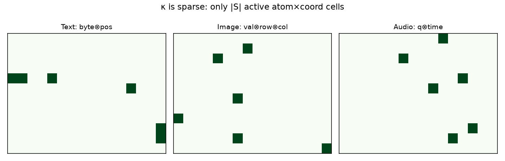
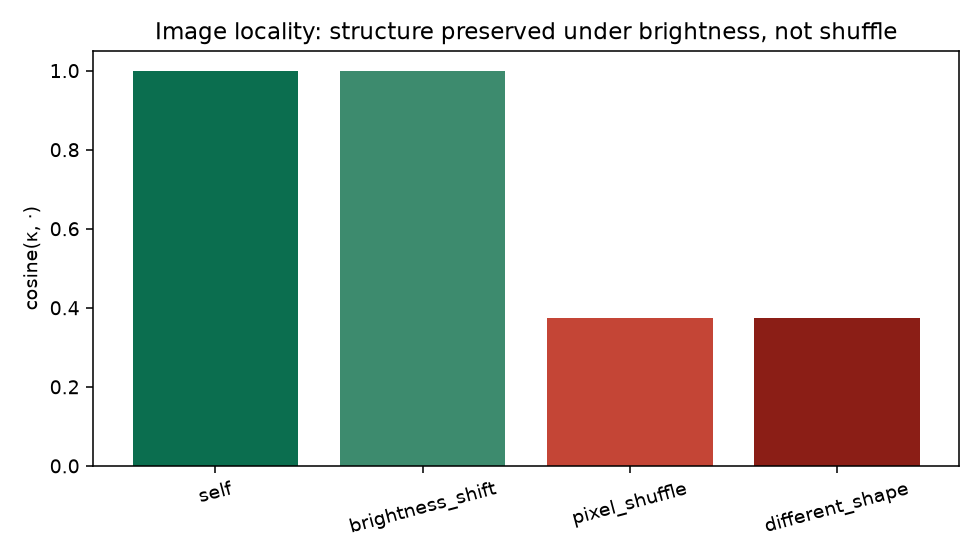
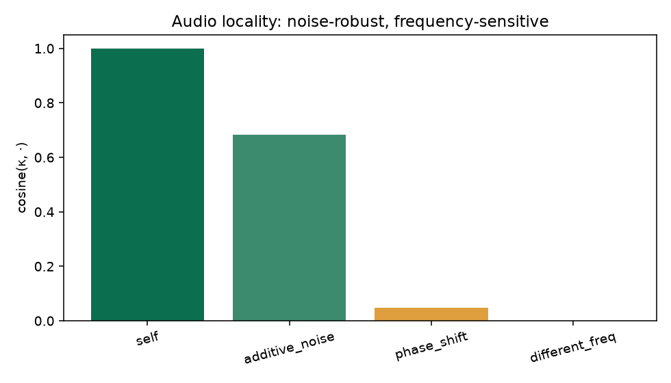
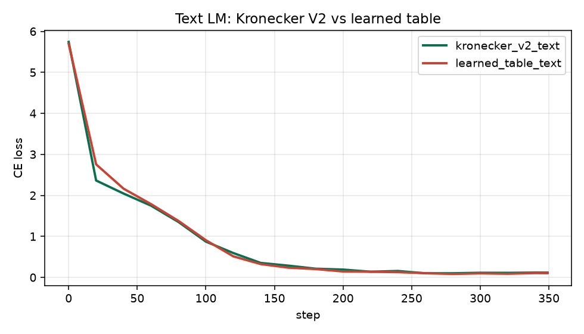
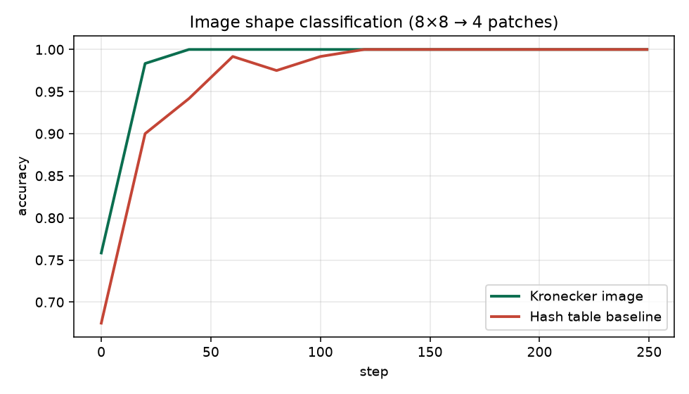
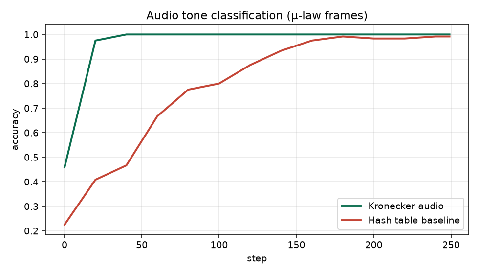
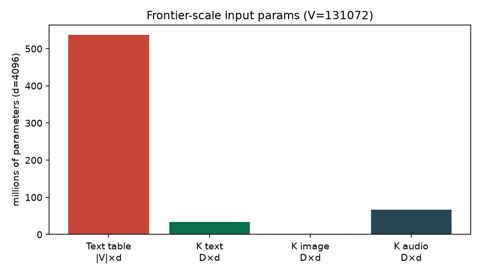

Problem: extend Kronecker beyond text so image patches and audio frames share the same atom×coordinate factorization. Solution: κ = |S|^{-1/2} Σ φ(a)⊗ψ(c) (images: atom⊗row⊗col), then e = κ W_proj.
V1 Kronecker embeddings factor text tokens as byte⊗position. Can the same structured codec idea represent images and audio without a new giant embedding table per modality?
Treat every modality unit as a set of (atom, coordinate) events; encode with a length-normalized Kronecker sum; project to d_model.
Images need a triple product because coordinates are 2D — still Kronecker algebra, not a different paradigm.
The transformer only ever sees e ∈ R^{d_model}.
D×d, not a per-modality giant lookup table.All numbers below are written by run_demo.py into artifacts/results.json — not hardcoded in this page.



| Probe | cosine(κ, ·) | Expected |
|---|---|---|
| Image brightness_shift | 1.000 | high (structure kept) |
| Image pixel_shuffle | 0.375 | low (structure broken) |
| Image different_shape | 0.375 | low |
| Audio additive_noise | 0.683 | high |
| Audio different_freq | -0.016 | low / near zero |
Same style of body; modality-specific Kronecker front-ends. Curves vs table/hash baselines:




At frontier text settings (|V|=131072, d=4096), Kronecker text projection uses
93.8% fewer input params than a full table.
Image and audio follow the same D×d projection pattern — no huge discrete vocab table.
| Claim | Result | Evidence |
|---|---|---|
| One factorization for 3 modalities | PASS | Text / image / audio codecs |
| Locality bias holds | PASS | Locality table + plots |
| Transformer trains on Kronecker inputs | PASS | Loss / accuracy curves |
| Input params stay structured & small | PASS | params.png · 93.8% text savings |